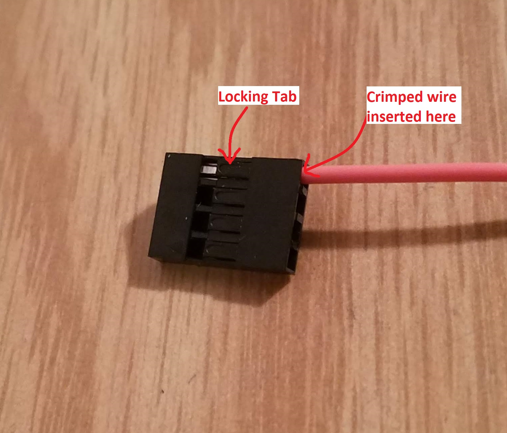

EENG 393
In Lab 13 - Supply Chain
Requirements
There is no turn-in associated with this inLab. You may need some of the tutorials
linked below to help with the asssmbly of your uSupply.
Objective
Case Study
Read the Sparkfun article about their purchase of a batch of
counterfit
ATmega328 chips.
Reflow Skillet
Hot Air Rework Station
Wire Tinning
Splicing wires
Make How To Splice Wires to NASA Standards
How to Mesh Splice
Crimp tool with Dupont Connector
JST connectors
A wire harness is a collection of wires with connectors at each end.
Wire harnesses are often a secondary consideration when designing a
PCB, but in fact there is a lot to consider.
- Gender
- While the gender of some connectors is obvious,
others can be confusing. Regardless, in order to make an electrical
connection, you need a male connector plugged into its female counterpart.
- Polarity
- When a connector can only be positioned in one
orientation to make a connection, it is said to be polarized. There are
a lot of good reasons for polarized connectors, but they are often a little
more expensive and less reliable than their non-polarized counterparts.
- Pitch
- The number of contacts per inch is called the pitch.
Imperial units prevail in most circles with 0.1" being the most common.
In this section we are going to walk through how to build a simple
4-wire harness to power your 556 timer PCB and gain access to the signals.
There will be four main parts to our wire harness:
- Wire - stranded wire is more flexible. As a result stranded
wire is preferred when building a wire harness. In order to work
with a wire, we will need to strip the insulation off the wire.
I purchased a pair of cheap Knipex Self Adjusting Insulation
Strippers and I am as happy as a clam. Do yourself a favor and
get some.
- Crimps - these are the small metal bits that connect to the wire.
The crimp has two sets of "wings", the larger pair at the rear of
the crimp hold the insulation of the wire, the small pair towards
front hold the conductive wire.

- Plastic housing - this holds several crimps in place so they
can be connected as a single unit. The crimps have a little tab
which locks it into place when the crimp is inserted into the
housing.

To create a harness, you will need to attach the crimp to the wire using
a crimp tool. The crimp connector has several opening to
accommodate different gages of wire. My crimp tool has
three openings, one to accommodate 24-28 gauge wires, one for 22-20 gauge
and one for 20-18 gauge. My tool is ratchet, meaning that as the handles
are squeezed together, the tool incrementally closes. Meaning that if the
jaws are brought together to a certain distance, the jaws will remain
there until the jaws are brought all the way together or the secret
switch is pressed. The jaws are not uniform across their width. Close
inspection reveals that both the upper and lower jaws consist of two
plates. These two plates form two regions across the width of the
jaws, a small side and a large side. When the jaws are fully closed,
the small side of the jaws leave the smaller side opening smaller than
the opening left on the large side. The first image below shows the small
side of the crimp tool, while the second shows the large side.


- Strip 2-3mm of wire
- Position the crimp in the crimp tool - 3 clicks is enough to
partially close the crimp tool and still have enough room to insert
the crimp into the 28-24 opening.

- Insert the stripped end of the wire into the crimp tool.
This is the msot difficult and critical step. I've found that
while holding the crimp tool in my left hand, I can manuever
my trigger finger on my left hand around and hold the female
portion of the crimp into the small side of the crimp tool's jaw.
You cannot alllow any portion of the female end to get in the
crimp tool's jaw. At the same time, you need to insert as much
of the crimp as you can into the crimp tool.
Only when I am happy with the crimp position and my finger
placement, do I turn the crimp tool over to look at the large
side of the crimp tool jaws. I then insert the stripped end of the
wire into the end of the crimp which is a few millimeters inside
the large side of the crimp tool. You need to insert the wire so
that the stipped wire is well into the inner wings but not into the
female socket on the end of the crimp.

- Crimp and inspect - Once you have the crimp and wire positioned
do you crank down on the handles. If you ahve done everything
correctly you will get a sturdy crimp connection to the wire.

- Insert crimped wire into plastic housing

You can remove the crimped wire from the harness by plucking up the
barb on the plastic housing.